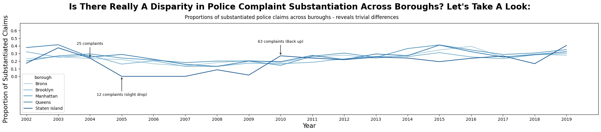

Proposition: Misconduct complaints are not handled consistently across NYC boroughs.
FOR the Proposition

Design Decisions and Rationale:
- I transformed the data to show each borough's substantiated rate compared to the overall citywide average, rather than only showing each borough’s individual rate. This is an earnest design choice because it gives the viewer a clearer baseline for comparison, and I score it a 2. It helps make the argument persuasive by showing which boroughs fall above or below the citywide average, making inconsistently easier to interpret.
- I would give this an earnest score 2. I included a horizontal line at 0 to represent the citywide average. This makes it clear that bars above the line have higher-than-average substantiated rates, while bars below the line of lower-than-average rates. This worked well because it gives the graph a meaningful reference point and prevents the viewer from interpreting the values without context.
- I ordered the bars from the most negative difference to the most positive difference. This makes the pattern easier to see and creates a clear left-to-right progression. It is mostly earnest because the ordering is based on actual values, but it also makes the differences more dramatic than an alphabetical order would. I believe this earns a 0.5 for honesty.
AGAINST the Proposition

Design Decisions and Rationale:
- I would score this technique -1.5. I lengthened the x-axis to stretch the visualization horizontally, and thus hide vertical variation. This helped to close the large gaps while not having to exclude too many years in the x-axis. Furthermore, I lengthened the y-axis by forcing the y limits to span -0.5 to 0.7. This also masked some larger gaps and variation and made the lines appear more uniform.
- I chose to make each line a different shade from the palette ‘Blues’. I would score this deceptive technique -0.5. I did this in order to distinguish, to some extent, between the different boroughs, while limiting visual variability as much as possible. This works well since the similar shades of blue makes it harder to identify boroughs that clearly stand out from the rest, while still maintaining some separation between each individual borough.
- I labeled the borough, Staten Island, in order to explain and minimize the visual difference. I give this a score of -1.0. I provide reasoning for the drop as attributed to the drop in counts of police complaints, but then note that this drop is minuscule so to express that the effects on substantiated claim proportions are trivial. This is to distract the reader from greatly considering this gap while refuting claims that there is a difference in substantiated claim rates across NYC boroughs.
Final Reflection
This project was relatively difficult since it was quite a struggle using the same dataset to prove two sides of an argument. Furthermore, it is hard to determine at what point our deceptive techniques truly did project the other side of the argument. I believe that certain visualizations, such as our line graph, is a lot easier to manipulate compared to bar graphs, where we struggled to force into different propositions without using what we thought were obvious deceptive techniques.
After completing this project, our perspective of ethical analysis and visualization has expanded. Aside from informed consent, we see that there are seemingly harmless methods that can in fact have negative impacts on groups of individuals. For example, we did not use anyone's personal data without consent, but our analysis arguably causes harm if someone were to use Figure 2 to minimize disparities across NYC boroughs. I believe that it is easy to forget that ethical analysis is more than just data collection. It's important to remember that misinformation can still be created from quality data, and it is important to consider the implications of the resulting biased conclusions.